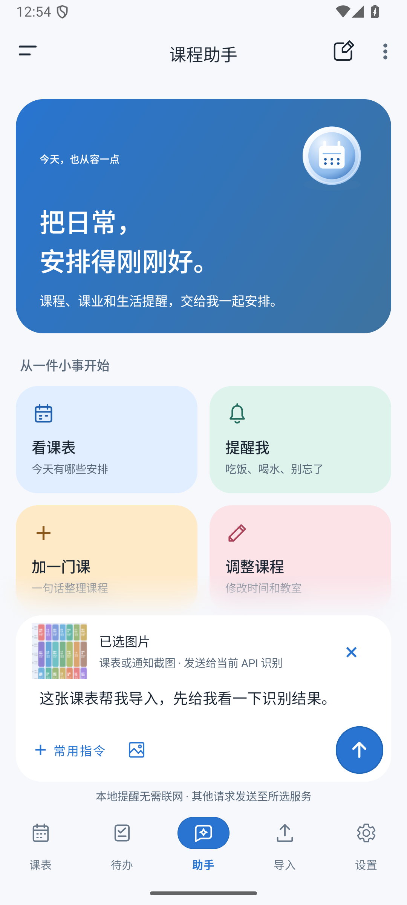
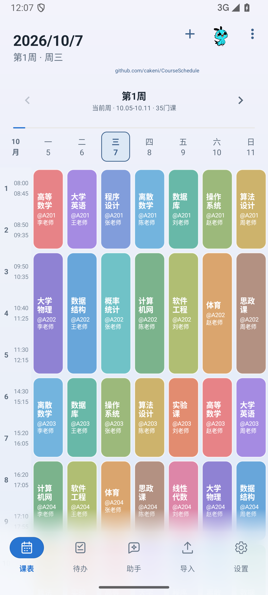
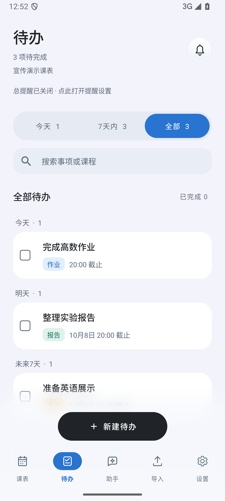

导入课程
不用一门一门填。
在 App 里打开学校教务系统，登录后进入课表页，就能尝试读取课程。普通解析没识别出来的话，还可以试 AI 网页识别。
手上只有课表截图也可以：在助手里附上图片，说明要导入什么。识别结果会先给你看，确认以后再写进课表。也支持 Excel（.xlsx）、CSV、JSON 和文本导入。
教务导入效果取决于学校页面；图片识别需要支持图片的模型。

Android 8.0 及以上 · MIT 开源
课表、待办，
都放在一个 App 里。
看这周的课，记还没交的作业。课表可以从教务导入，也能把截图交给 AI 整理，核对后再保存。
安装包通过 GitHub 下载。手机浏览器打不开时，可以换浏览器试试。

导入课程
在 App 里打开学校教务系统，登录后进入课表页，就能尝试读取课程。普通解析没识别出来的话，还可以试 AI 网页识别。
手上只有课表截图也可以：在助手里附上图片，说明要导入什么。识别结果会先给你看，确认以后再写进课表。也支持 Excel（.xlsx）、CSV、JSON 和文本导入。
教务导入效果取决于学校页面；图片识别需要支持图片的模型。

待办与提醒
作业、实验报告、考试都可以放进待办，设置截止时间和提醒，做完就勾掉。按今天、7 天内或全部查看，也能搜索事项和课程。
待办也接了 AI。比如说一句“周五晚上 8 点交实验报告，提前一天提醒”，助手会整理成待确认的事项；已有事项也能查询、修改和删除。
AI 操作会先让你核对，确认后才执行。

普通课表和待办保存在本机，不用注册 App 账号。AI 功能需要自行配置服务、模型和 API Key，调用费用由服务商收取；不用 AI 也可以手动排课、记待办。